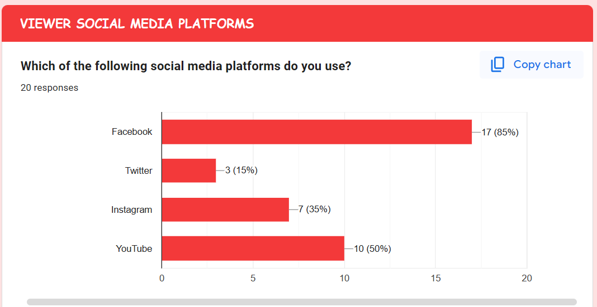

💯 Approval
100% of viewers liked the livestream content, indicating very high audience approval.
This report presents the analysis of our second livestream based on viewer feedback and data collected through a Google Form. The purpose of this analysis is to evaluate the performance of the stream, identify strengths, and determine areas for improvement.
Facebook: Personal Account : Rendie Zayne
Members:
Rendie Zayne R Vego
Princess Nhaeema Ligutan
Samantha Aliyah Dimaano
Michael Kal-el Indolos
Jameehra Oro
Marc Jelo Naval
Channel Kristal Aristorenas
Sheikah Ellaine Tejada
Name of Life Labs Learning Facilitator: Miss Julie Lanting Ramirez
Date of Submission: March 18, 2026
This report presents the analysis of our second livestream based on viewer feedback and data collected through a Google Form. The purpose of this analysis is to evaluate the performance of the stream, identify strengths, and determine areas for improvement.

This graph shows the distribution of viewers by age group, gender, and school affiliation.
This shows that the livestream successfully reached both its target audience and viewers audience outside APEC Schools.
100% of viewers liked the livestream content, indicating very high audience approval.
65% were very satisfied, and 25% were satisfied.
The stream was described as fun, interactive, and entertaining.
These strengths show that the livestream was successful in both content delivery and audience engagement.
Improving these areas can make future livestreams more professional and engaging.
This indicates that the majority of viewers were actively interested and engaged throughout the livestream.
This resulted in a more effective and successful livestream.
The livestream had moderate to high viewership, with 20 respondents.
Viewers discovered the livestream through:
This shows that social media, especially Facebook and peer sharing were the most effective promotion methods.
Overall, the second livestream was highly successful and well-received. The data shows strong engagement, high satisfaction, and positive feedback from viewers. However, improvements in interaction, audio, and content delivery can further enhance future livestreams.
Through this activity, We learned that data analytics is important in evaluating performance. It helped us understand what works well and what needs improvement. We also realized that interaction and engagement are key factors in making a successful livestream.